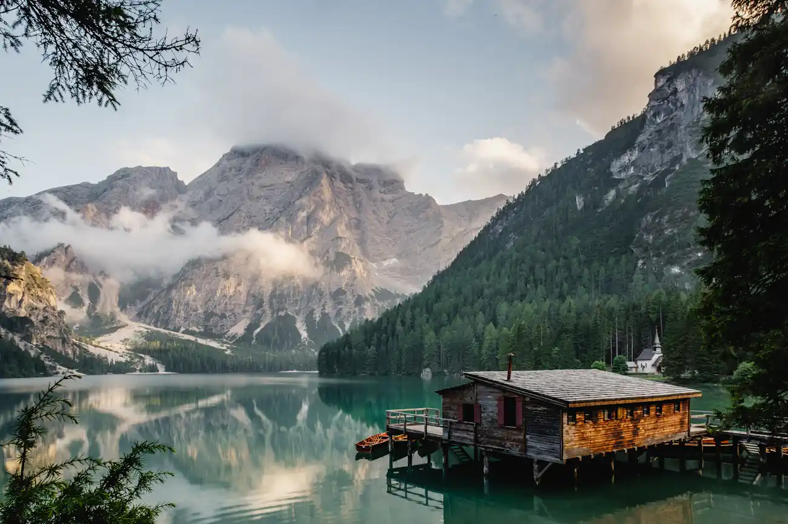
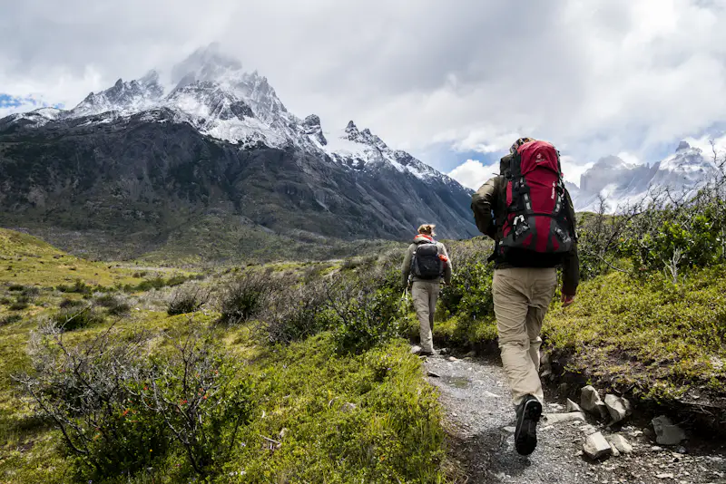
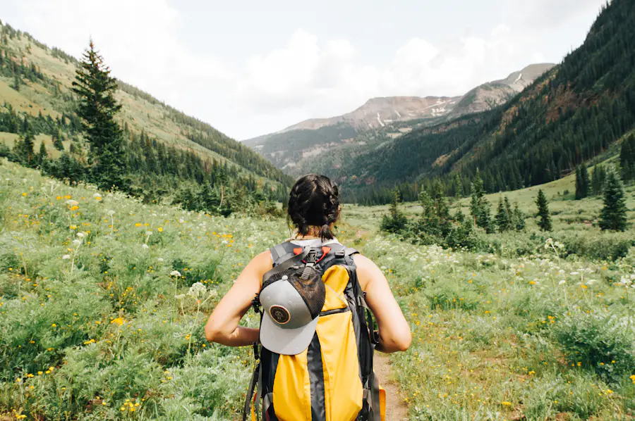

Enough for good company. Few enough to move thoughtfully.
Independent journeys, closer to the ground
Go beyond the familiar.
Small-group journeys for curious travelers, led by local experts into wild places.
For the long way round

46° 51′ N 9° 31′ ESomewhere above the tree line
08
travelers
draft maximum
draft maximum
A better point of view
Local knowledge.
Room to roam.
Room to roam.
A different kind of distance
The best route
is rarely the shortest.
We build journeys around the people who know a place best: the ones who live there, walk it daily, and understand when to turn back.
Meet StacklyN° 01Good travel begins with listening.


Ways into the wild
Made for the
way you move.
A route should fit the place, the season and your legs. Start with a landscape; we’ll take it from there.
01 / On foot
Trekking
& alpine High paths, hut nights, measured pace 02 / By water River
& coast Quiet water, open horizons 03 / With patience Wildlife
& fieldcraft Observe without disturbing 04 / Close to home Local
connections Spend time, not just money, locally 05 / Your own route Private
departures A little more room to make it yours 06 / Take your time Long stays
& slow miles Fewer transfers, fuller days
& alpine High paths, hut nights, measured pace 02 / By water River
& coast Quiet water, open horizons 03 / With patience Wildlife
& fieldcraft Observe without disturbing 04 / Close to home Local
connections Spend time, not just money, locally 05 / Your own route Private
departures A little more room to make it yours 06 / Take your time Long stays
& slow miles Fewer transfers, fuller days
* Every itinerary is shaped with local partners and adjusted to conditions on the ground.
One clear place to prepare
The details,
well in hand.
A calm field journal for the practical parts: route notes, kit lists, meeting points and the small things you’ll want to know before setting out.
See the field journalA preview of the tools we’re building for each journey.
YOUR NEXT JOURNEY
IN PREPARATIONAlta Via, slowly.
Dolomites · 6 days · Trekking
ON THE RIDGE12°Clear early
Clouds after 14:00Conditions change. Check with your guide.
Clouds after 14:00Conditions change. Check with your guide.
Before you go02 / 04
Confirm boot fitDone
Pack rain shellDone
Save offline mapNext
Day 03 · Ascent1,240 m
08:0010:3013:0015:30
YOUR GUIDE: LOCAL PARTNERLAST UPDATED JUST NOW
Designed to keep the useful things close.Field journal / preview
Small by design
A few things we plan
around from day one.
These are draft operating targets for the Stackly concept, not published trip statistics.
Knowledge that comes from living with the landscape.
Gentle, steady or strenuous—with honest guidance.
The summit is a possibility, never the only point.
A thoughtful start
From first
question to
first light.
You bring the curiosity. We’ll bring the local detail, the honest advice and a plan that leaves space for the unexpected.
Start a conversationFirst, we listen
Tell us what pulls you outside.
A place, a season, a level of effort—or simply the kind of day you want to have.
The starting point is yours.Then, we shape it
Build the route with people who know it.
Local partners help choose the right trail, timing and overnight stops for the conditions.
A plan with room to breathe.Before you go
Get the useful details, not a brochure.
Clear kit advice, a practical briefing and a direct line to your guide.
Ready, without the rush.Out there
Follow the day as it unfolds.
Weather and trail conditions matter. Your guide makes the call, and the good moments take their time.
Pay attention. Stay curious.Words from the trail
The stories are
still out there.
We’ll share verified notes from travelers once the first Stackly journeys have taken place.
Guest note / To be verified
Editorial placeholderA verified traveler’s words about the route, the local guide and the pace will appear here.
Guest note / To be verified
Editorial placeholderA real reflection on what changed when the group slowed down and left room for the day.
Guest note / To be verified
Editorial placeholderOne specific moment from the trail, told in the traveler’s own words, belongs here.
No invented reviews. The first stories will be published after a journey is complete.
Before you lace up
A few good
questions.
Still weighing it up? Start here, then tell us what you need to know.
Ask us directly
How demanding are the journeys?
Each route will include a plain-language effort rating, daily distance and elevation. We’ll talk through your experience before recommending a trip—no pressure to keep up with a pace that isn’t yours.
Who leads each departure?
Local guides and regional partners lead on the ground. Their knowledge shapes the route, the timing and the decisions we make when weather or trail conditions change.
Can you adapt a journey for our group?
Private departures can be adjusted around your dates, interests and comfort level, subject to what is practical and respectful in the destination. We’ll be clear about trade-offs before anything is booked.
What happens if the weather turns?
Your guide makes the safety call with local conditions in mind. We plan alternatives where possible, but mountain and water itineraries can change; flexibility is part of traveling well.
Are these trips ready to book?
This is a concept homepage. Dates, live itineraries, pricing and partner details need to be confirmed before departures are offered. Contact us to register interest while those details are prepared.
The good kind of getting lost
Start with
a place.
Tell us where you’ve been thinking about. We’ll help you work out what comes next.
Let’s talk about it